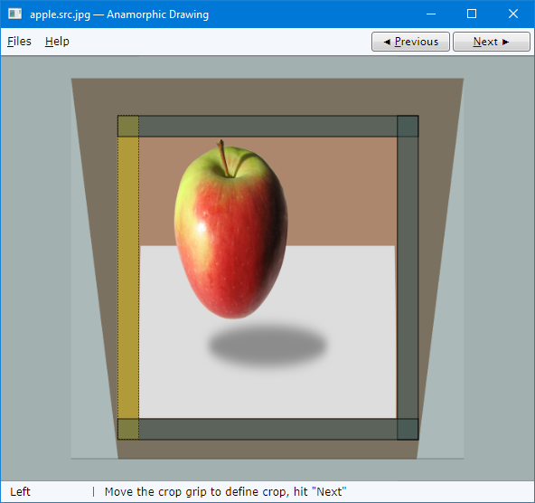

Download source code — 530.4 KB
Epigraph:
Painting is an illusion, a piece of magic, so what you see is not what you see.
- Philip Guston
Contents
Anamorphic Drawing
What is shown in the picture above? No, this is not a toy colt standing on a piece of paper. And this is not a photograph of a toy colt.
The pen reveals it: it lies flat on a piece of paper which in turn lies flat on the desk; at the same time, the colt is showing in its background. It looks impossible.
In fact, only two objects are placed on the glass top of the desk: a flat piece of paper and a pen lying flat on top of it. The picture is a photograph showing this desk and these two object on top. On this piece of paper, there is a drawing of a colt; the paper is cut by the contour of the image of the toy colt. The photograph is taken from the special vantage point creating the illusion of the vertical position of the colt. It looks like it “sticks out” of the plane of the drawing. Naturally, the drawing is distorted in a special way, to support the illusion.
This is one kind of anamorphic art; there are many interesting examples of it on youtube.
Of course, anyone can get trained and learn drawing of such images. However, this is not so easy and is considerably more difficult than drawing in a traditional way. What if I show a very simple and convenient way to cheat here, so even a person with rudimentary drawing skills could create such a miracle?
How? Using this application:
Insight
The idea is fairly simple. Let’s assume we place a rectangular piece of paper on a desk and photograph it so it would be pictured as a symmetric trapezoidal shape, due to perspective effect. Put or suspend some object on top of it. Imagine that later a picture will be put in the same place. It could be an image of the same object and the same piece of paper, deformed accordingly, to produce the impression of the object placed vertically, as in the original scene.
Let’s think, how the photograph should be transformed? Apparently, if we place the same piece of paper vertically, it would be pictured as the rectangular area with the same aspect ratio as the original piece of paper. Likewise, we can transform the picture using the following criterion: the trapezoidal shape representing the image of the piece of paper should be transformed into the rectangular shape with the same ratio as the original piece of paper. In other words, it should be precise “reverse perspective” transform.
Here is the second idea: how to pass the information on all required parameters of transfer to the software application?
First, we require the user to make a photograph of the same aspect ratio as the aspect ratio the original piece of paper. Additionally, we need the coordinates of the four points, defining the location and shape of the image of this piece of paper on the photograph. The user has to put some markers on these four points, the corners of the trapezoidal shape. That will be all we need.
How to Create the Illusion?
So, the user needs to produce a photograph with symmetric trapezoidal shape of the image of reference piece of paper and mark its corners and make sure the aspect ratio values are the same for this piece of paper and the photograph. If should be done in one of the two ways, or their combination: a) the piece of paper should be cut to the aspect ratio of the frame, b) when the picture is taken, it can be cropped to aspect ratio as the original piece of paper. Usually, the second method is the simplest. When a picture is loaded in the software, its aspect ratio will conduct some important information on the scene.
This rules formulated above are approximate. They make good approximation under the following conditions:
- The effective focal distance of the lens is not too short; in practice, 100 mm (in 35 mm equivalent) or higher.
- The lens is relatively close to rectilinear and has relatively low distortions; in practice, any reasonably priced interchangeable lens or embedded zoom lens can work well enough.
- The depth of field should well cover the size of the piece of paper and all objects of interest.
- The horizon of the scene should not be too low. In other words, the perspective effect should be distinct but moderate. In practice, the angular sizes of the closer and more distant horizontal sides of the piece of paper can be different by the factor of 2, but hardly considerably more.
- The angular sizes of all objects of interest should be comparable with the angular sizes of the piece of paper; in other words, the piece of paper should occupy a big part of the scene.
Aspect ratio values conduct important information used by the software to perform accurate image transformation. The remaining part can be passed via the software UI: the user needs to point to each of the four angles of the trapezoidal shape representing the piece of paper.
Finally, the resulting image should be photographed from the same very point as the original scene. It will make the vantage point best for the illusion. That’s why using a tripod will be the best choice. Now, let’s see how to perform all the steps, including the use of the software.
Workflow
Photograph the object on some rectangular piece of paper. Make sure that the top and bottom edges of the piece of paper are parallel to the lower boundary of the frame. The image of this piece of paper shown in perspective should be symmetrical: ![[photograph]](./Resources-articles/2018-03-04.Anamorphic-Drawing-for-the-Cheaters.photograph.webp) . This requirement is approximate. Use a tripod. When the picture is taken, don’t move the tripod and mark the location of the piece of paper. You will need the same locations when you photograph the result.
. This requirement is approximate. Use a tripod. When the picture is taken, don’t move the tripod and mark the location of the piece of paper. You will need the same locations when you photograph the result.
Make sure your picture aspect ratio is the same as of the piece of paper photographed. If needed, crop the picture to required aspect ratio using any suitable image editor.
Load your source picture by AnamorphicDrawing.exe:
Mark four corners of the image of the paper by placing corresponding corner grips. You can quickly start by clicking on each corner clockwise, starting from the top-left one. Don't worry about accuracy: you can fix it later:
Using Tab key or mouse, activate each of the corner grips and adjust their locations accurately, using arrow keys:
The adjustment of a grip position can be performed quickly but with the accuracy of one screen pixel — that’s why it will be the best to work with maximizes main application window. There are four steps of the motion; please see the detailed description in the documentation on the user interface.
Hit "Next" to obtain an anamorphic image. The piece of paper is transformed to appear as a rectangular shape with the same aspect ratio as the source image:
Note that the shape of the apple becomes not only elongated, but it is also wider on the top end. This is natural: normal perspective projection makes the image foreshortened, with reduced sizes of more distant parts of the object. No wonder, our reverse perspective transform should do the opposite.
Move four crop grips to define crop:
Now a crop is defined, matching the edges of the piece of paper. On this image, one can see that the transformed image is not strictly rectangular. This is the effect of some distortion in optics.
Hit “Next”:

Now the anamorphic image is cropped and scaled. You can save it or, optionally, print out immediately:
The image should be scaled for printing, to approximately match the size of the original piece of paper which was photographed. Anamorphic image is considerably taller than this piece of paper.
For good results, it’s better to keep the perspective moderate; otherwise anamorphic image comes out too tall, which, in turn, leads to high distortions.
The printed image can be used as it is. Alternatively, the same image can be processed to obtain contours of the image, which can be made very pale, to serve as a convenient pad for manual drawing. The first image, full-colored one, can be used as a reference, a model for drawing.
The picture on paper is prepared. Then it needs to be cut out, to remove the background areas. On the pictures shown above, this is the brown-colored area.
The anamorphic image can now be photographed. Assuming the tripod is still in the same position, and the zoom level of the lens is the same as in first place, we can place resulting print using the same position and orientation as the original image.
Implementation
The heart of the software is some transformation of the image, which is not an affine transform. Non-affine transformations are not readily available through typical imaging libraries. Affinity function between affine spaces preserves points, straight lines and planes, which is the case with the perspective transform we need. From the other hand, if some transformation is affine, a set of parallel lines remains parallel after the transformation, which is not the case.
One example of such transformation is shown above as a transition between the image before transformation and after transformation.
Here, the brown rectangle represents the entire image transformed into a trapezoidal shape. The image of the piece of paper under the apple object is transformed from trapezoidal shape to a rectangle (with certain accuracy), which is, obviously, the case only for some special shapes.
I ended up rolling out my own transformation function implemented on the pixel level of WPF System.Windows.Media.Imaging, only for a specific special case. For this case, we assume that the image of the piece of paper (light color) is strictly symmetrical; and the trapezoid base line is parallel to the lower edge of the photograph. In this case, it is enough to re-sample each horizontal pixel stride of the original image symmetrically. Let’s say, we have some separate re-sampling ratio values for the upper and lower edges of the photograph. All the strides in between should have re-sampling ratio linearly interpolated between the upper and lower ratio.
namespace AnamorphicDrawing.Main {
using System;
using System.Windows;
using System.Windows.Media.Imaging;
class PerspectiveTransform {
internal PerspectiveTransform(
double horizontalScaleFrom,
double horizontalScaleTo)
{
this.horizontalScaleFrom = horizontalScaleFrom;
this.horizontalScaleTo = horizontalScaleTo;
this.maxHorizontalScale =
Math.Max(horizontalScaleFrom, horizontalScaleTo);
}
internal BitmapSource Apply(BitmapSource source) {
int destinationWidth =
(int)Math.Round(maxHorizontalScale * source.PixelWidth);
WriteableBitmap destination = new WriteableBitmap(
destinationWidth, source.PixelHeight,
source.DpiX, source.DpiY, source.Format, source.Palette);
int bytesPerPixel =
destination.BackBufferStride / destinationWidth;
int sourceStride = bytesPerPixel * source.PixelWidth;
int destinationStride = bytesPerPixel * destinationWidth;
byte[] sourceArray = new byte[sourceStride];
byte[] destinationArray = new byte[destinationStride];
byte fillByte = (source.Format.Masks.Count == 4) ?
(byte)0 : (byte)0xff;
double factor = (horizontalScaleTo - horizontalScaleFrom) /
source.PixelHeight;
if (UseInterpolation == Interpolation.Linear)
LinearInterpolation(
factor, bytesPerPixel, source, destination,
destinationWidth, sourceArray, destinationArray,
sourceStride, destinationStride, fillByte);
else
NearestNeighborInterpolation(
factor, bytesPerPixel, source, destination,
destinationWidth, sourceArray, destinationArray,
sourceStride, destinationStride, fillByte);
return destination;
}
void NearestNeighborInterpolation(...) {
}
void LinearInterpolation(
double factor, int bytesPerPixel, BitmapSource source,
WriteableBitmap destination, int destinationWidth,
byte[] sourceArray, byte[] destinationArray, int sourceStride,
int destinationStride, byte fillByte)
{
for (int y = 0; y < destination.PixelHeight - 1; ++y) {
double compression = horizontalScaleFrom + factor * y;
int sourcePixelWidthMinusOne = source.PixelWidth;
source.CopyPixels(
new Int32Rect(
0, y, source.PixelWidth, 1),
sourceArray, sourceStride, 0);
for (int х = 0; х < destinationWidth; ++х) {
double shift = (source.PixelWidth *
compression - destinationWidth) / 2d;
double xSrc = (х + shift) / compression;
int xSrcCurrent = (int)xSrc;
int xSrcNext = (xSrcCurrent == sourcePixelWidthMinusOne) ?
xSrcCurrent : xSrcCurrent + 1;
double deltaX = xSrc - xSrcCurrent;
for (byte byteIndex = 0; byteIndex < bytesPerPixel; ++byteIndex)
if (xSrcCurrent >= 0 && xSrcNext < source.PixelWidth) {
if (xSrcCurrent != xSrcNext) {
double y1 =
sourceArray[
xSrcCurrent * bytesPerPixel + byteIndex
];
double y2 = sourceArray[
xSrcNext * bytesPerPixel + byteIndex
];
destinationArray[х * bytesPerPixel + byteIndex]
= (byte)(y1 + (y2 - y1) * deltaX);
} else
destinationArray[х * bytesPerPixel + byteIndex]
= sourceArray
[xSrcCurrent * bytesPerPixel + byteIndex];
} else
destinationArray[х * bytesPerPixel + byteIndex] = fillByte;
}
destination.WritePixels(
new Int32Rect(0, y, destinationWidth, 1),
destinationArray, destinationStride, 0);
}
}
internal double HorizontalScaleFrom { get { return horizontalScaleFrom; } }
internal double HorizontalScaleTo { get { return horizontalScaleTo; } }
internal enum Interpolation { Linear, NearestNeighbor, }
internal Interpolation UseInterpolation { get; set; }
double horizontalScaleFrom, horizontalScaleTo, maxHorizontalScale;
}
}
The pixel res-sampling for the transform is implemented with two interpolation algorithms: nearest-neighbor (not shown above) and more accurate linear interpolation. In fact, nearest-neighbor is not used; it was developed as a first step.
The transformation shown above accepts only two parameters: two aspect ratio values horizontalScaleTo and horizontalScaleTo. First one is calculated for the upper edge of the photograph, and the second one – for the lower edge. The maximum of these two values is used to make sure all sizes are scaled only down because the downscale re-sampling is more accurate.
To calculate these two re-sample ratio values, we need parameters passed from the user to the software. It includes only 9 numbers: aspect ratio of the image which software finds from the image itself, and coordinates of the four corner points taken from the user input, as shown above.
Geometry
The aspect ratio of the image and four corner points are used to calculate the geometry for the perspective transfer, which is done by the class MarkFactorSet. The calculated geometry parameters are passed to calculate re-sampling ratio values.
The UI layer picks up corners data to calculate resulting transformed bitmap:
BitmapSource TransformImplementation() {
return Main.ImageProcessingUtility.PerspectiveTransformFromRelativePoints(
collaboration.BitmapSource, topLeft.Location, topRight.Location,
bottomRight.Location, bottomLeft.Location, image.Width);
}
The method PerspectiveTransformFromRelativePoints adds the aspect ratio of the image, calculates the geometry and obtains the re-sampling ratio factors:
internal static BitmapSource PerspectiveTransformFromRelativePoints(
BitmapSource bitmap, Point topLeft, Point topRight, Point bottomRight,
Point bottomLeft, double imageWidth)
{
double bitmapAspect = (double)bitmap.PixelWidth / (double)bitmap.PixelHeight;
MarkFactorSet factorSet = new MarkFactorSet(topLeft, topRight, bottomRight,
bottomLeft, bitmap.PixelHeight, bitmapAspect, bitmap.PixelWidth / imageWidth);
if (!factorSet.IsValid) return null;
return new PerspectiveTransform(
factorSet.HorizontalScaleFrom, factorSet.HorizontalScaleTo).
Apply(bitmap);
}
The class MarkFactorSet uses pretty simple school geometry to calculate the scale factors. Please see the full source code for further detail.
User Interface
The user interface is fairly simple and yet pretty interesting in terms of the project development methods and maintainability.
First of all, it is implemented as a single main WPF window, not counting two help windows. The design of the 3-step wizard is based on three instances of UserControl stacked on top of each other. The wizard navigation (“Previous”/“Next”) is performed by controlling the visibility of these UserControl instances.
This application can be used as a demonstration of the technique of description of the graphical detail of behavior in XAML, backed by dependency properties, DependencyProperty.
This is how the change in states of the grippers automatically shows a visual clue to the user. Let’s review this technique on the example of the more feature-rich corner gripper. With this approach, we can isolate the visual aspects of the behavior of these controls from non-visual ones. To emphasize such isolation, I also split parts of the same control class into two different files, using the partial class C# feature.
Here is how it looks:
internal abstract class BaseGrip : ResizeGrip {
}
Derived class BaseGrip overrides the detail of keyboard handling specific to its behavior:
internal partial class CropGrip : BaseGrip {
protected override void OnMouseDown(System.Windows.Input.MouseButtonEventArgs e) {
Focus();
}
protected override bool IsGoodMotionKey(KeyEventArgs e) {
if (this.Direction == GripDirection.Horizontal) {
if (e.Key == Key.System) {
return e.SystemKey == Key.Left || e.SystemKey == Key.Right;
} else {
return e.Key == Key.Down || e.Key == Key.Left || e.Key == Key.Right;
}
} else {
if (e.Key == Key.System) {
return e.SystemKey == Key.Up || e.SystemKey == Key.Down;
} else {
return e.Key == Key.Up || e.Key == Key.Down;
}
}
}
}
And finally, we need to augment the same class with properties used in XAML:
partial class CropGrip {
enum GripRoleValue : byte {
HighValueMask = 0x0f,
OrientationMask = 0xf0,
HighValue = 1,
Vertical = 0x10,
Horizontal = 0x20,
}
internal enum GripRole : byte {
Left = GripRoleValue.Horizontal,
Right = GripRoleValue.Horizontal | GripRoleValue.HighValue,
Top = GripRoleValue.Vertical,
Bottom = GripRoleValue.Vertical | GripRoleValue.HighValue
}
internal enum GripDirection :
byte { Horizontal = GripRoleValue.Horizontal, Vertical = GripRoleValue.Vertical, }
static FrameworkPropertyMetadata RolePropertyMetadata = new FrameworkPropertyMetadata();
static DependencyProperty RoleProperty =
DependencyProperty.Register(
"Role",
typeof(GripRole),
typeof(CropGrip),
RolePropertyMetadata);
internal GripRole Role {
get { return (GripRole)GetValue(RoleProperty); }
set { SetValue(RoleProperty, value); }
}
internal bool IsHighValueRole { get {
return ((byte)Role & (byte)GripRoleValue.HighValueMask) > 0; }
}
internal GripDirection Direction { get {
return (GripDirection)((byte)Role & (byte)GripRoleValue.OrientationMask); }
}
}
To use it in XAML, we need Setter and MultiTrigger elements. Importantly, instead of applying them to each grip element, we should better define the common style for all of them:
<ResourceDictionary>
<Style x:Key="grip" TargetType="ui:LocationGrip">
<Setter Property="Cursor" Value="SizeAll"/>
<Setter Property="Width" Value="{StaticResource locationGripSelectionSize}"/>
<Setter Property="Height" Value="{StaticResource locationGripSelectionSize}"/>
<Style.Triggers>
<MultiTrigger>
<MultiTrigger.Conditions>
<Condition Property="IsMouseOver" Value="true"/>
<Condition Property="IsSelected" Value="true"/>
</MultiTrigger.Conditions>
<MultiTrigger.Setters>
<Setter Property="Background" Value="Red"/>
</MultiTrigger.Setters>
</MultiTrigger>
<MultiTrigger>
<MultiTrigger.Conditions>
<Condition Property="IsMouseOver" Value="true"/>
<Condition Property="IsSelected" Value="false"/>
</MultiTrigger.Conditions>
<MultiTrigger.Setters>
<Setter Property="Background" Value="Green"/>
</MultiTrigger.Setters>
</MultiTrigger>
<Trigger Property="IsMouseOver" Value="false">
<Setter Property="Background" Value="Transparent"/>
</Trigger>
<Trigger Property="IsSelected" Value="true">
<Setter Property="Foreground" Value="Navy"/>
</Trigger>
<Trigger Property="IsSelected" Value="false">
<Setter Property="Foreground" Value="DarkGray"/>
</Trigger>
<Trigger Property="IsSelected" Value="true">
<Setter Property="Template" Value="{StaticResource ResourceKey=focusedSelected}"/>
</Trigger>
<Trigger Property="IsSelected" Value="false">
<Setter Property="Template" Value="{StaticResource ResourceKey=unSelected}"/>
</Trigger>
</Style.Triggers>
</Style>
</ResourceDictionary>
Having the style, we can apply it to actual grip elements.
<UserControl x:Class="AnamorphicDrawing.Ui.CropStep" xmlns="http://schemas.microsoft.com/winfx/2006/xaml/presentation" xmlns:x="http://schemas.microsoft.com/winfx/2006/xaml" xmlns:system="clr-namespace:System;assembly=mscorlib" xmlns:ui="clr-namespace:AnamorphicDrawing.Ui">
<ui:CropGrip x:Name="left" Role="Left" Cursor="SizeWE" Style="{StaticResource vertical}"/>
<ui:CropGrip x:Name="top" Role="Top" Cursor="SizeNS" Style="{StaticResource horizontal}"/>
<ui:CropGrip x:Name="right" Role="Right" Cursor="SizeWE" Style="{StaticResource vertical}"/>
<ui:CropGrip x:Name="bottom" Role="Bottom" Cursor="SizeNS" Style="{StaticResource horizontal}"/>
</UserControl>
User Interface Design: Collaboration and Grip Couplers
There is a number of other interesting design constructs created for this project. In particular, the interface ICollaborationProvider and the class Collaboration provide collaboration between instances of UserControl, representing three wizard steps. This collaboration is important because they share the same BitmapSource object. For this purpose, all three UserControl step classes implement the interface ICollaborationProvider. In this approach, all three classes remain isolated, providing access only to the essential properties required by collaboration.
The classes CropGripCoupler and LocationGripCoupler play similar roles. The class CropGripCoupler couple the location of all four corner grips with the location of lines connecting them. These lines are important to the user who needs a visual clue of the order of grips. It is also helpful to match these lines precisely with the edges of the trapezoidal shape. Likewise, the class LocationGripCoupler couples the behavior of the crop grips with the crop rectangle. This is actually the example of loose coupling, with all its benefits. Indeed, it would be much more difficult to develop controls embedding all four grips of each type, losing the opportunity to develop each grip class as a fairly simple separate independent control class.
It is pretty difficult to explain all the interesting detail in a single article. Please refer to the source code, directories “AnamorphicDrawing/UI” and “AnamorphicDrawing/UI.Control”. I’ll gladly try to answer all questions on this matter.
Build and Compatibility
As the code is based on WPF, I used the first platform version decently compatible with WPF — Microsoft.NET v.3.5. Correspondingly, I provided a solution and a project for Visual Studio 2008. I’ve done it intentionally, to cover all the readers who could use WPF. Later .NET versions will be supported; later versions of Visual Studio can automatically upgrade solution and project files.
In fact, Visual Studio is not required for the build. The code can be batch-built, by using the provided batch file “build.bat”. If your Windows installation directory is different from the default, the build will still work. If .NET installation directory is different from default one, please see the content of this batch file and the comment in its first line — next line can be modified to get the build.